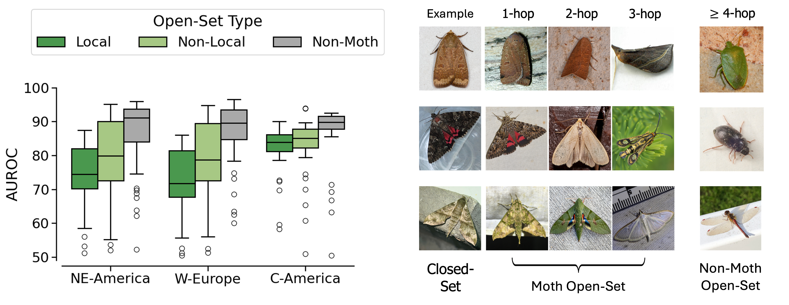
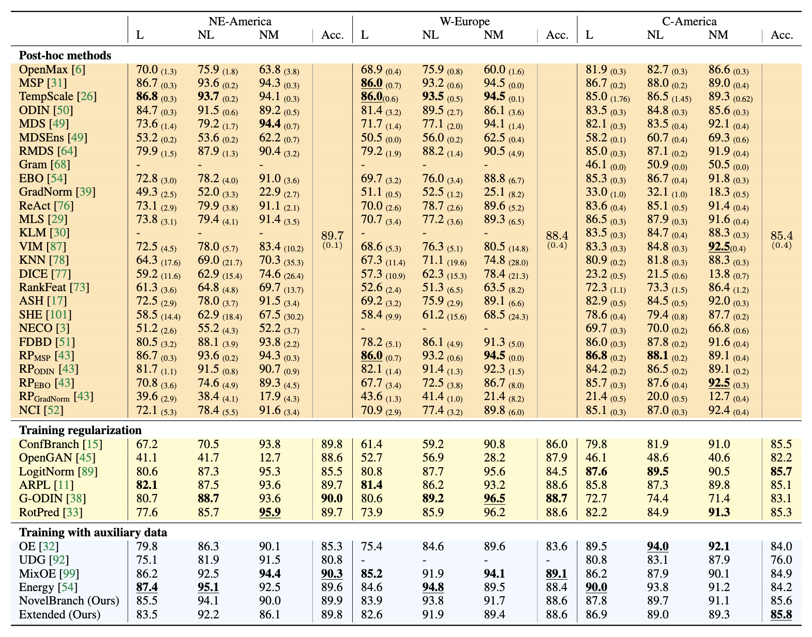

Yuyan Chen1,2, Nico Lang3, B. Christian Schmidt4, Aditya Jain2, Yves Basset5,6,7, Sara Beery8, Maxim Larrivée9, David Rolnick1,2
1McGill University 2Mila - Quebec Artificial Intelligence Institute 3University of Copenhagen 4Agriculture and Agri-food Canada 5Smithsonian Tropical Research Institute 6Biology Center, Czech Academy of Sciences 7Maestria de Entomologia, University of Panama 8Massachusetts Institute of Technology 9Montréal Insectarium
Global biodiversity is declining at an unprecedented rate, yet little information is known about most species and how their populations are changing. Indeed, some 90% Earth’s species are estimated to be completely unknown. Machine learning has recently emerged as a promising tool to facilitate long-term, large-scale biodiversity monitoring, including algorithms for fine-grained classification of species from images. However, such algorithms typically are not designed to detect examples from categories unseen during training – the problem of open-set recognition (OSR) – limiting their applicability for highly diverse, poorly studied taxa such as insects. To address this gap, we introduce Open-Insect, a large-scale, fine-grained dataset to evaluate unknown species detection across different geographic regions with varying difficulty. We benchmark 38 OSR algorithms across three categories: post-hoc, training-time regularization, and training with auxiliary data, finding that simple post-hoc approaches remain a strong baseline. We also demonstrate how to leverage auxiliary data to improve species discovery in regions with limited data. Our results provide timely insights to guide the development of computer vision methods for biodiversity monitoring and species discovery.


@inproceedings{chen2025openinsect,
title = {Open-Insect: Benchmarking Open-Set Recognition of Novel Species in Biodiversity Monitoring},
author = {Chen, Yuyan and Lang, Nico and Schmidt, B. Christian and Jain, Aditya and Basset, Yves and Beery, Sara and Larrivée, Maxim and Rolnick, David},
booktitle = {NeurIPS 2025 Track on Datasets & Benchmarks},
year = {2025},
url = {https://openreview.net/pdf?id=63Tia99ofI}
}For questions, please email us at: yuyan.chen2@mail.mcgill.ca.
{kind=link}